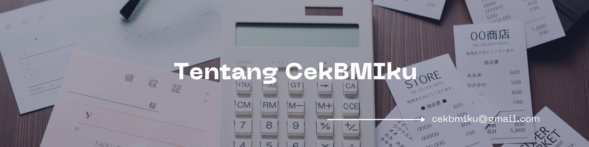
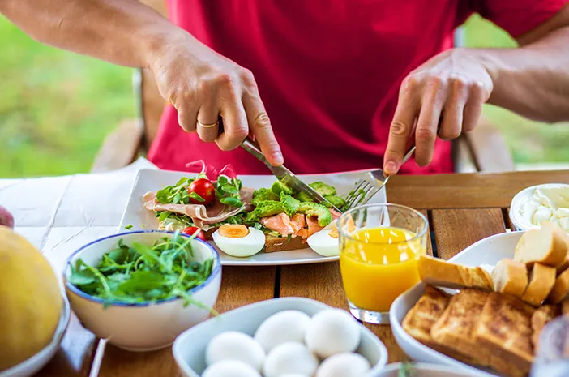

Memiliki tubuh ideal tentu menjadi dambaan banyak orang. Bukan hanya soal penampilan, tetapi juga sebagai tanda bahwa tubuh berada dalam kondisi sehat dan seimbang. Bagaimana dengan kamu? Sudahkah berat badanmu termasuk ideal? Yuk, cari tahu sekarang lewat BMI Kalkulator di CekBMIku dan dapatkan gambaran kesehatan tubuhmu dengan cepat dan mudah!
Pria
Wanita

Website kalkulator BMI yang membantu pengguna mengetahui apakah berat badan mereka sudah ideal berdasarkan tinggi badan. Website ini dirancang agar mudah digunakan, cepat, dan informatif. Selain menghitung BMI, CekBMIku juga memberikan penjelasan kategori berat badan serta tips menjaga pola hidup sehat.
Tujuan kami sederhana:
Membantu setiap orang lebih sadar akan kesehatannya
melalui cara yang praktis dan menyenangkan.
Fitur Utama:
- Kalkulator BMI interaktif
- Penjelasan hasil dan kategori berat badan
- Tips sehat sesuai hasil BMI
- FAQ dan artikel seputar kesehatan
Semua orang pasti ingin selalu sehat dan terhindar dari berbagai penyakit. Dengan tubuh dan pikiran yang sehat, kualitas hidup juga meningkat.
Punya berat badan ideal tentu jadi idaman banyak orang. Dengan pola hidup seimbang, kamu bisa mempertahankannya dalam jangka panjang.
Berat badan ideal sering menjadi impian banyak orang karena mencerminkan kesehatan dan kepercayaan diri.
Real food adalah makanan alami tanpa proses berlebih dan tanpa tambahan bahan kimia. Pilihan cerdas untuk tubuh yang lebih sehat.

Mulailah dari kebiasaan kecil seperti minum cukup air, tidur cukup, dan olahraga ringan untuk hidup lebih seimbang.
Nutrisi terbagi menjadi makro dan mikro, keduanya penting untuk menunjang energi dan menjaga sistem tubuh agar optimal.